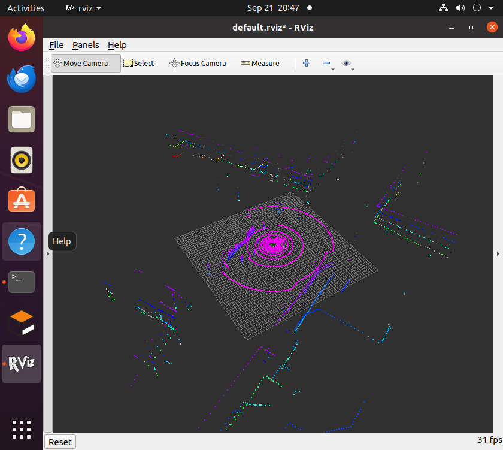
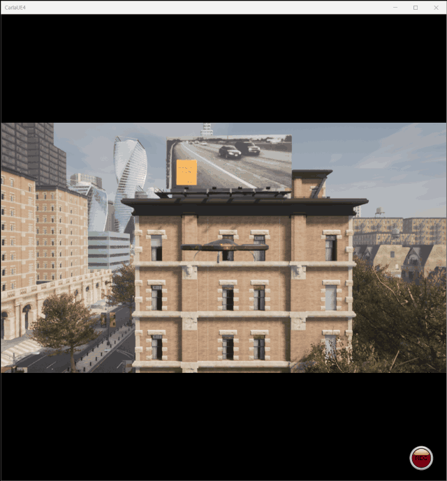

AirSim 载具与位置控制
本文介绍空域载具八叉树三维寻路项目中的飞行器与传感器接入：把宿主 Windows 上 AirSim 的激光雷达与位姿接进客户机的 ROS，使飞行器可以被话题驱动、被算法使用。
对应总纲第 7 节（示例与复现）中的载具部分。之所以单独成页，是因为模拟器与 ROS 分处两台机器，这条"跨机器链路"本身有不少容易踩的坑。
1. 为什么模拟器跑在宿主上
模拟器是 AirSim 1.8.1，随 OpenHUTB 低空模拟器 发行版提供，本质上是一个 Windows/Unreal 程序，没有办法搬进 Ubuntu 虚拟机。
因此本项目采用"模拟器在宿主、ROS 在客户机"的分工：
Windows 宿主: CarlaUE4.exe + AirSim 插件 ← RPC 服务端，监听 41451
│ RPC over VMnet8
▼
Ubuntu 客户机: airsim_bridge.py ← 我们在 ROS 里的接入点
│ 发布 sensor_msgs/PointCloud2 + Odometry + TF
▼
点云建图 → 八叉树 → A* → RViz
AirSim 天然就是"一个 RPC 服务端 + 任意多个客户端"的架构，所以这个分工不需要额外桥接层。 仓库里建立虚拟机和空域载具之间的连接与 基于 ROS 消息解耦的无人机键盘遥控两篇文档用的是同一套连接方式。
三条前提，缺一不可：
- 宿主 Windows 防火墙放行入站 41451
- 客户机装
airsim与msgpack-rpc-python - 客户机的
host填宿主机的 VMnet8 地址（不是127.0.0.1）。 本文实测为192.168.198.1，但每台机器可能不同，用ip route | grep default查你自己的
防火墙的一个坑：Windows 防火墙里显式 Block 规则优先于显式 Allow 规则。 如果之前那个"是否允许该程序通信"的弹窗被点过取消，系统会自动建一条 Block 规则， 此时再怎么按端口加 Allow 都没用，必须先把那条 Block 规则禁用掉。 另外，连接被丢包时
connect_ex返回的是 11（超时），而端口关闭返回的是 111（连接被拒绝） —— 这两个数字含义不同，是判断"防火墙"还是"服务没起来"的关键。
2. 载具与激光雷达的配置
载具、传感器、场景全部由 AirSim 的 settings.json 描述，不需要写 SDF 或 URDF。
文件放在模拟器包根目录（与 CarlaUE4.exe 同级）：
{
"SettingsVersion": 1.2,
"SimMode": "Multirotor",
"Vehicles": {
"Drone1": {
"VehicleType": "SimpleFlight",
"AutoCreate": true,
"Sensors": {
"LidarSensor1": {
"SensorType": 6,
"Enabled": true,
"NumberOfChannels": 16,
"RotationsPerSecond": 10,
"PointsPerSecond": 100000,
"X": 0, "Y": 0, "Z": -1,
"VerticalFOVUpper": 10, "VerticalFOVLower": -40,
"HorizontalFOVStart": -180, "HorizontalFOVEnd": 180,
"DrawDebugPoints": false,
"DataFrame": "SensorLocalFrame"
}
}
}
}
}
关键参数：
| 参数 | 值 | 说明 |
|---|---|---|
SimMode |
Multirotor | 多旋翼模式（另有 Car / ComputerVision 模式） |
VehicleType |
SimpleFlight | AirSim 内置飞控，自带位置与姿态控制 |
SensorType |
6 | 6 表示激光雷达 |
NumberOfChannels |
16 | 垂直 16 线 |
RotationsPerSecond × PointsPerSecond |
10 × 100000 | 每圈约 1 万点（实测 9707 点/帧） |
VerticalFOVUpper/Lower |
10 / -40 | 垂直视场，主要向下，适合对地建图 |
HorizontalFOVStart/End |
-180 / 180 | 水平 360° |
DataFrame |
SensorLocalFrame | 点云输出在雷达本体系（见第 3 节，这个选择很关键） |
VehicleType: SimpleFlight意味着 AirSim 自己负责飞行控制。 这也解释了为什么本项目没有位置控制器的源码 —— 只需通过moveToPositionAsync(x, y, z, speed)下达目标点，飞控会完成加速、减速与悬停。 这样做把精力集中在寻路算法上，而不是重复实现一套 PD 控制律。
3. 坐标系换算（本项目最容易错的地方）
AirSim 与 ROS 用的坐标系两个层级都不一样，必须逐层换算：
| 层级 | AirSim | ROS（REP-103） | 换算 |
|---|---|---|---|
| 世界系 | NED（北-东-地） | ENU（东-北-天） | |
| 机体系 | FRD（前-右-下） | FLU（前-左-上） |
姿态四元数不能只做轴交换，必须按基变换复合：
其中 是世界 NED→ENU 的基变换（绕轴 转 180°）， 是机体系 FRD→FLU 的基变换（绕 轴转 180°）。
如果只换位置、忘了姿态，会出现"位置对、但点云朝向错"的现象 —— 飞机平飞时看不出来，一转向地图就歪了。
3.1 点云为什么用 SensorLocalFrame
DataFrame 有两个取值：
| 取值 | 含义 | 对下游的影响 |
|---|---|---|
VehicleInertialFrame（默认） |
点在世界轴向、原点在载具 | 点云不是机体系，不能直接配 TF 使用 |
SensorLocalFrame |
点在雷达本体系 | 可直接套用"本体系点云 + TF"的通用做法 |
选后者的好处：下游建图节点只需一次 TF 查询，同时得到"点云到世界的变换"和 "射线原点"，不必为点云单独传一份位姿。这也让建图节点与具体模拟器解耦 —— 换成任何能发布本体系点云的传感器，那边都不用改。
4. 桥接节点 airsim_bridge.py
实现见 src/air/octree_uav_3d_pathfinding/scripts/airsim_bridge.py。
| 方向 | 话题 | 类型 | 说明 |
|---|---|---|---|
| 订阅 | /uav/goal |
geometry_msgs/Point | 目标点（ROS 世界系 ENU） |
| 发布 | /cloud_in |
sensor_msgs/PointCloud2 | 激光点云，frame 为 lidar_link |
| 发布 | /ground_truth/odom |
nav_msgs/Odometry | 位姿与速度（ENU） |
| 发布 | /tf |
tf2_msgs/TFMessage | world → base_link → lidar_link |
| 发布 | /uav/status |
std_msgs/String | 运行状态 |
两个实现要点：
- 一把锁串起所有 AirSim 调用。AirSim 的 msgpackrpc 客户端不是线程安全的， 位姿与点云两个定时器共用一个客户端，必须串行化。
- 按时间戳去重。雷达每秒转 10 圈，而轮询频率可能更高，用
LidarData.time_stamp判断是否为新一帧，避免重复发布同一帧。
5. 参数说明
参数位于 config/params.yaml 的 airsim_bridge 组：
| 参数 | 默认值 | 说明 |
|---|---|---|
| host / port | 192.168.198.1 / 41451 | 宿主机在 VMnet8 上的地址 |
| vehicle_name / lidar_name | Drone1 / LidarSensor1 | 需与 settings.json 一致 |
| world_frame / body_frame / lidar_frame | world / base_link / lidar_link | 帧名 |
| lidar_x / lidar_y / lidar_z | 0 / 0 / -1.0 | 雷达在机体系（NED）下的安装位置 |
| world_z_offset | 24.94 | 世界系 z 校准 |
| state_rate / cloud_rate | 20.0 / 10.0 | 位姿与点云发布频率（Hz） |
| goal_velocity | 3.0 | 飞行速度（m/s） |
| auto_takeoff | true | 首次收到目标点时自动解锁起飞 |
world_z_offset的作用：AirSim 的 NED 原点不一定在地面。本机场景实测 载具在地面时 NEDz = +24.94（即原点在其上方约 25 m），不加偏移的话 RViz 网格会悬在点云上方 25 m、体素着色也会全挤进一个颜色。 加这个常量纯属平移，不改变任何几何关系，因此不影响寻路结果。
6. 运行方法
① 先在宿主 Windows 上启动模拟器
进入模拟器的安装目录运行 CarlaUE4.exe：
cd <模拟器安装目录>
CarlaUE4.exe
必须在安装目录里启动 —— 它要读同目录的 settings.json（载具与激光雷达的配置）。
安装位置因人而异，本文档不写死具体路径；目录里应该能看到 CarlaUE4.exe、settings.json、
CarlaUE4\、Engine\ 这几项。详细说明见环境配置与前置准备 第 5.2 节。
等 30~60 秒让场景加载完，确认 RPC 端口已监听：
netstat -ano | findstr 41451
② 再在客户机里启动模块：
source ~/uav_ws/devel/setup.bash
roslaunch octree_uav_3d_pathfinding main.launch
③ 让它飞向目标点（目标点是 ROS 世界系 ENU，单位 m）：
# 需要一个新的终端
source ~/uav_ws/devel/setup.bash
rostopic pub -1 /uav/goal geometry_msgs/Point "{x: 40.0, y: 0.0, z: 5.0}"
首次收到目标点时会自动解锁起飞，随后飞向该点。飞行过程中八叉树地图沿轨迹不断扩展。
7. 运行效果
环境与链路自检会依次检查模拟器层（AirSim RPC）与ROS 层（点云、TF、话题）， 跑完自动退出，不影响仿真继续运行：
[INFO] ================================================================
[INFO] 模块: octree_uav_3d_pathfinding v0.2.0
[INFO] ================================================================
[INFO] ROS 发行版 : noetic
[INFO] Python 版本 : 3.8.10
[INFO] AirSim 客户端 : 1.8.1
[INFO] octomap 版本 : 1.9.8
[INFO] 模拟器地址 : 192.168.198.1:41451
[INFO] [1/4] AirSim RPC 正常：载具列表 ['Drone1']
[INFO] [2/4] 点云链路正常：已收到 12 帧，最新一帧 9707 个点，frame_id=lidar_link
[INFO] [3/4] TF 正常：world -> base_link，当前位置 (-1.77, 1.12, 0.00)
[INFO] [4/4] 话题通信正常：/uav/status 收发成功（1 条），订阅者 1 个
[INFO] ----------------------------------------------------------------
[INFO] 检查结果：
[INFO] [通过] AirSim RPC 连接
[INFO] [通过] 激光点云链路
[INFO] [通过] TF 坐标变换
[INFO] [通过] 话题通信
[INFO] 环境与链路自检全部通过，模块可以开始后续开发。
RViz 中可以看到激光点云与桥接节点广播的 base_link / lidar_link 坐标系：

向 /uav/goal 下发目标点后，飞行器在模拟器中受控起飞并飞向该点
（目标点为 ROS 世界系 ENU，桥接节点负责换算成 AirSim 的 NED）：

8. 主要话题
| 话题 | 类型 | 方向 | 说明 |
|---|---|---|---|
| /cloud_in | sensor_msgs/PointCloud2 | 发布 | 激光雷达点云（lidar_link 系） |
| /ground_truth/odom | nav_msgs/Odometry | 发布 | 飞行器位姿与速度（ENU） |
| /uav/goal | geometry_msgs/Point | 订阅 | 目标点（ROS 世界系 ENU） |
| /uav/status | std_msgs/String | 发布 | 桥接节点运行状态 |
| /tf | tf2_msgs/TFMessage | 发布 | world → base_link → lidar_link |
排查用命令：
# 确认模拟器可达（0 = 通；11 = 超时/被防火墙丢包；111 = 端口关闭）
python3 -c "import socket;s=socket.socket();s.settimeout(2);print(s.connect_ex(('192.168.198.1',41451)))"
# 确认点云在流
rostopic hz /cloud_in
# 确认坐标变换
rosrun tf tf_echo world base_link
参考
- AirSim 激光雷达文档
- AirSim 设置说明
- OpenHUTB 低空模拟器文档
- 模块源码：
src/air/octree_uav_3d_pathfinding/
本文档及配套模块代码在编写过程中使用了 AI 大模型辅助（需求分析、方案讨论、代码与文档起草、问题排查）。
文中连接方式、激光雷达参数与坐标换算已在 Ubuntu 20.04.6 + ROS Noetic + AirSim 1.8.1 环境下实测确认
（点云 9707 点/帧、10 Hz，world → base_link 变换正常）；第 7 节的自检输出为该节点的预期格式，
将在实机运行后替换为真实终端输出。作者对提交内容的正确性与完整性负全部责任。